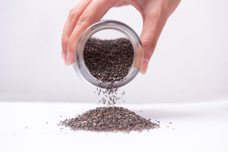

I n the UK, a third of women will experience urinary incontinence, and there is a risk for men, too. How can you prevent and treat it? Pelvic floor experts share the best techniques to keep the “forgotten muscle” functioning well.
Be aware of your pelvic floor
“It is the floor of your core,” says the pelvic physiotherapist Sara Reardon, AKA the Vagina Whisperer , who works in New Orleans and is the author of Floored: A Woman’s Guide to Pelvic Floor Health at Every Age and Stage . “Everybody has one, not just women. You have your pelvis, which is that ring of bones that sits at the base of your spine. At the very bottom of that is a basket of muscles, and that is what we call your pelvic floor. These muscles are contracting throughout the day to hold in the contents of your bladder and bowels, to support the pelvic organs, to give you spinal stability, and then they relax to empty the bladder and bowels. Every time we get out of a chair or cough they activate. They are working and functioning without us having to really think about it.”
This is why it is “crucial that everybody makes sure that their pelvic floor is strong”, says Vikram Khullar, a professor and head of the urogynaecology department at Imperial College healthcare NHS trust.
There is no need to be ashamed
Pelvic floor dysfunction can have a huge impact on women’s quality of life but it is preventable and can be treated.Photograph: Posed by model; MTStock Studio/Getty Images
“About one in three women are thought to have urinary incontinence ,” says Clare Bourne , a pelvic health physiotherapist based in London and the author of Strong Foundations: Why Pelvic Health Matters . “About one in 10 will experience faecal incontinence, which is potentially under-reported. About 50% of women over 50 have some form of pelvic organ prolapse.”
Reardon says: “More women have urinary leakage than have osteoporosis, high blood pressure and diabetes, and yet we are very aware of those problems.” Bourne says: “In reality, the problems that are related to the pelvic floor are still difficult to talk about.” She adds: “It is bladders, bowels; it’s not trendy, it’s not sexy – even though it’s ironic, because it is related to sex. There is just so much taboo.”
“Pelvic floor dysfunction can have a huge impact on women’s quality of life,” says Dr Ranee Thakar , the president of the Royal College of Obstetricians and Gynaecologists and a consultant at Croydon University hospital. “It prevents them from going out. It prevents them from socialising. And the thing is, it is preventable and it can be treated.”
If you are experiencing issues, you should go to your GP. Whether you can get a referral to see a urogynaecologist or physiotherapist – and how long you have to wait – is something of a postcode lottery in England, says Thakar, who carries out a range of surgical procedures for pelvic floor disorders.
Childbirth isn’t the only reason for pelvic floor problems
“A significant number of women will get incontinence or prolapse symptoms after childbirth, which get better with time,” says Thakar. And yet, “it is definitely pervasive in all ages and stages”, says Reardon. “Pregnancy, giving birth and menopause are three big risk factors for developing pelvic floor problems. But that is not the only reason people have pelvic floor problems. You can have pelvic floor problems if you’ve never given birth. There could be pelvic floor tension, which makes it difficult to insert a tampon, have vaginal intercourse or have a gynaecological examination, because the muscles at the opening of the vagina are so tight or tense.”
Reardon points to a study of female college students who had not given birth but experienced stress incontinence, “because they were doing high impact workouts such as cheerleading, gymnastics, running and volleyball – things where there’s a lot of pressure down on those muscles, and we’re not training those muscles to respond to that activity”.
Men can experience weaknesses too
There is a big difference in pelvic floor exercises for men compared to women.Photograph: Posed by model; Maskot/Getty Images
There are two main groups of men with issues, says Gerard Greene , a specialist physiotherapist in male pelvic health who works in Birmingham and London. “The first is men who have prostate cancer and have their prostate removed.” This can cause “urinary leakage or incontinence, which comes as a shock to these men, because prior to diagnosis, a lot of them were symptom-free and working, active and doing sports, then they get lots of urinary leakage and are having to wear a pad, which is distressing. There is really good evidence that very specific pelvic floor exercises for those men will help to get them dry. Those men who get urinary incontinence also get complete erectile dysfunction, so we do lots for that as well.”
The other main group of men Greene treats are those experiencing pelvic pain, including many cyclists with the very painful condition pudendal neuralgia. “They can’t sit, drive or cycle,” says Greene. Khullar says: “In their 70s, men catch up with women in terms of urinary symptoms. Urinary issues can be a factor in people taking early retirement or moving into a care home.”
How similar are pelvic floor exercises for men compared with women? “There is a big difference,” says Greene. “Men need to work the front pelvic floor muscles. The phrase we use is ‘nuts to guts’ – a lot of them are tightening the back passage, but that kind doesn’t help, and can make things worse. We get them using Squeezy , the award-winning NHS pelvic floor app.”
Persevere with exercises
Kegels are synonymous with pelvic floor strengthening but not everyone likes to use the term, says Bourne. “I prefer ‘pelvic floor muscle exercises’. Kegels came from the American gynaecologist [Dr Arnold Kegel] who came up with the concept and they have generally been focused on the squeeze element. And really, when you think about the pelvic floor, yes, we think about strength, but we also think about flexibility, endurance, and coordination.” Some people need to work on relaxing their pelvic floor more than strengthening it, explains Bourne.
“Kegel contractions are OK, but you need to do them for different lengths of time,” adds Reardon. “Quick contractions then relaxing afterwards, but also longer-hold endurance contractions of five to 10 seconds. You also need to do them in different positions, because we don’t just leak when we sit. You need to work them while standing, walking and exercising in the gym.”
Khullar says: “The key thing to remember is that it takes time. With all muscle strength training, people tend to give up by about a month – but it’s not until the third month that they will start to see the real benefits.” While the recommended guidance is 10 contractions, three times a day, you don’t need to stay at this level for ever, he adds. You also don’t need to stop everything to do pelvic exercises, instead “a trigger might be having a cup of tea or brushing your teeth”.
Engage when lifting
Engage or contract your pelvic floor as you lift.Photograph: Posed by model; Lyndon Stratford/Getty Images
The rise in strength training among women has led to an increased awareness of urinary incontinence . “If you are lifting weights,” says Reardon, “what is really important, is that you are engaging or contracting your pelvic floor as you lift. As you load your body, that is pressure down on your pelvic floor, and your core needs to respond to that. The other thing is not holding your breath – that doesn’t allow those muscles to engage, so make sure that you’re breathing.”
Listen to your body if you experience symptoms. “People who have pressure in the vagina, prolapse or leakage, will often keep doing the exercise,” says Reardon. “But all of those problems are information from your body that your pelvic floor can’t quite handle what you are asking it to do – so you really need to scale back.”
Get the mirror out
“Grab a mirror and have a look at what is going on down there,” says Bourne. “If you try to gently contract your pelvic floor, you should see a movement inwards of the vaginal opening, and then it should drop back down as you relax. Or you can put your finger on the perineum, the area between your vagina and your anus. You should almost feel the muscles lift away from your finger and into the body.”
The advice for men is that they “should think about shortening their penis, which will get the pelvic floor to draw in and contract”, says Bourne.
Don’t drink too much
Stay hydrated but don’t chug it all at once.Photograph: Posed by model; elenaleonova/Getty Images
The advice on water intake varies, but over two litres a day for a 70kg person is often suggested, of which a substantial proportion will be from food. “This whole thing about drinking more than two litres is way more than people need,” says Khullar. “If you’ve got somebody who is drinking two and a half litres, of course they’re going to be passing urine all the time, and then their bladder fills up, and then they are leaking.”
You should also be careful what you drink, says Reardon. “If you struggle with leakage, certain drinks may bother your bladder more and contribute to urgency to pee. Caffeinated drinks, alcoholic drinks, carbonated drinks, spicy foods – those are what we consider bladder irritants.”
But you should also be careful not to restrict fluids, she adds. “That can actually cause more bacteria in the urine and cause more urgency – and even a UTI. Make sure that you are staying hydrated and sipping water throughout the day, instead of chugging it all at once.”
Keep moving
“Motion is lotion for these muscles,” says Reardon. “As much as they can get weak, they can also get tight and tense. We all sit for a long time, so getting in your movement throughout the day – whether it is alternating between a standing and sitting desk, or doing some breathing and stretching in between meetings, or going for a walk.” It is key to look at pelvic health holistically, says Bourne. “There is evidence that being overweight is associated with urinary incontinence,” says Thakar. “As is having a chronic cough.”
Manage stress
“When we are stressed, we breathe slightly differently,” says Bourne. “This can influence pelvic floor function, because the diaphragm and the pelvic floor have a close relationship. The nervous system is complex: if we’re in fight or flight mode all the time, think about what that does to most of our muscles. We generally find that those who are experiencing stress may also have more increased tone in their pelvic floor – and that might then connect to the symptoms that they are experiencing.”
Look after your bowels
Chia seeds can help if the bowels don’t work properly.Photograph: Huizeng Hu/Getty Images
“If the bowels don’t work properly and there is constipation, that decreases bladder capacity,” says Khullar. Increasing fibre won’t necessarily help everyone, he says, recommending instead “particulates like chia seeds and milled linseed”. He also stresses the importance of managing constipation after giving birth: “The vagina has been stretched [so straining] is going to lead to potential prolapse – and also stretching of the pelvic floor.”
Use the loo mindfully
Women should sit down to use the toilet and make sure they aren’t pushing excessively or “power peeing”, as Reardon puts it. “When you hover over a toilet seat, you don’t relax your pelvic floor and hip muscles all the way, so you may not empty your bladder completely. It is fine to do every once in a while, if it’s a yucky toilet, but doing that every time you pee can lead to that incomplete bladder emptying – or it can contribute to pelvic floor tension.”
“Another really important tip for peeing is go when you have the urge to go, but don’t go ‘just in case’,” says Reardon. Likewise, “if you hold the urge for too long, your muscles get over tense. It’s normal to pee every two to four hours during the day and zero to two times at night.”
“If the urge comes before that two-hour mark, it is likely to be a fake urge,” says Reardon. “Do a couple of Kegel contractions, which tells your bladder to chill out, and take some big, deep breaths. You’ll find that if you distract yourself, the urge goes away.”
Future-proof your pelvic floor
Prevention is better than cure so everybody should be doing pelvic floor exercises.Photograph: Posed by model; Manu Vega/Getty Images
“Everybody should be doing pelvic floor exercises ,” says Khullar. “It isn’t any more ridiculous than people in their 60s and 70s going to the gym to do strength training. It is exactly the same thing.”
Some of the other experts are more cautious about doing pelvic floor exercises without any issues. “If you work it too hard and you do it the wrong way, it can lead to symptoms of pelvic pain,” says Greene.
“A lot of our research is based on symptoms,” says Bourne, “but we know that prevention is better than cure. For example, those who do pelvic floor exercises throughout pregnancy are much less likely to have incontinence. My approach is: yes, do pelvic floor exercises, but also consider your bowel health, your bladder health and stress. As part of all of that, you are taking care of your pelvic health.”